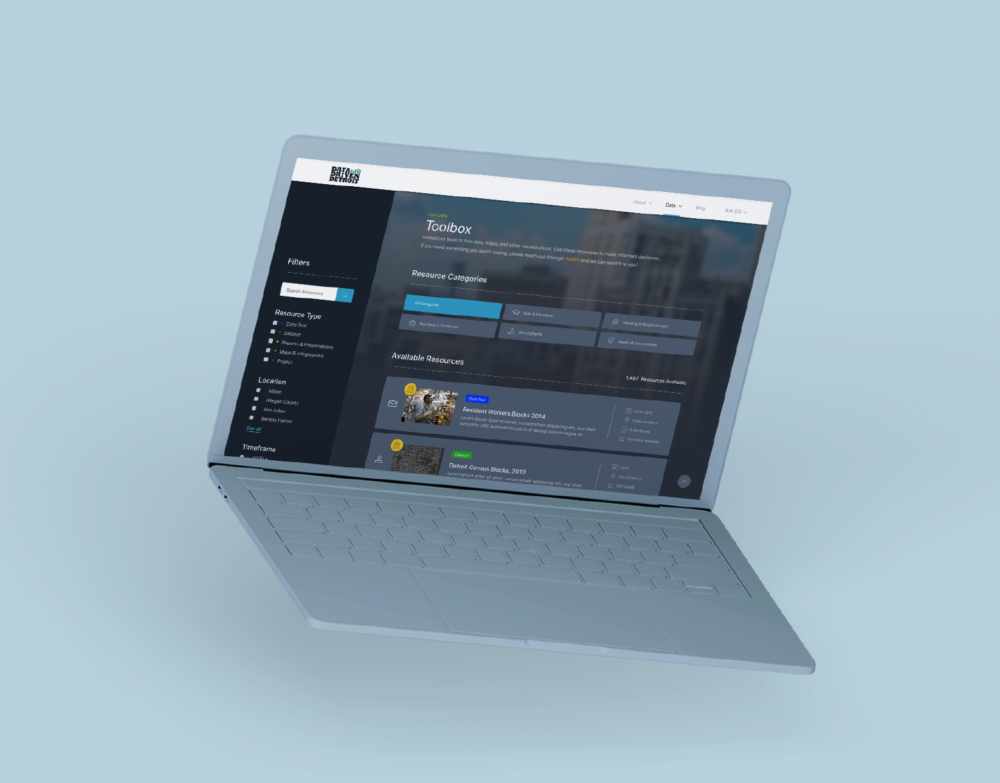
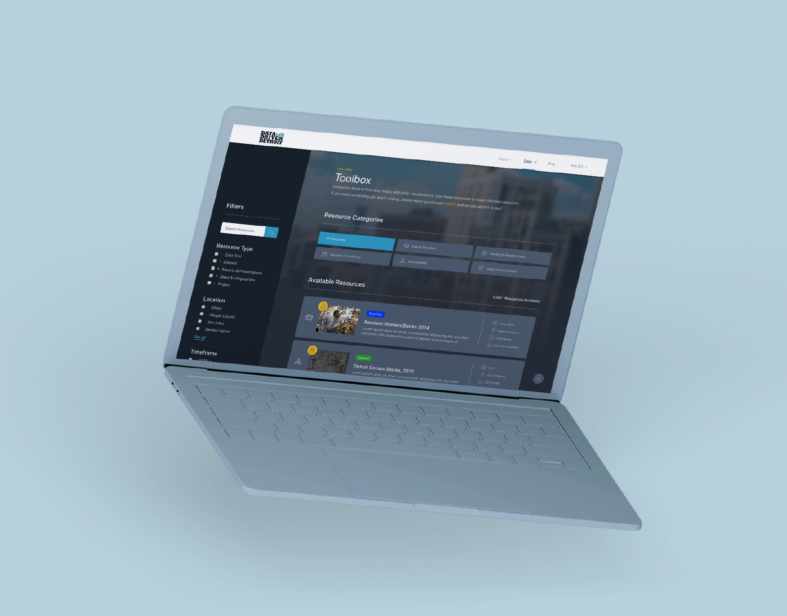

Data Driven Detroit Designing for a smarter city
Client project for Data Driven Detroit with respect to their efforts of redesigning their public-facing website
User Experience Research User Experience Design Interaction Design Visual Design
Four UX students Two D3 team members
 

The Project
People need an easier way to access and understand open data for the city of Detroit to make data-informed decisions and play a larger role in the development of the city. My team’s role: design the library where this open data is stored and accessed, known as the Toolbox.The Problem
Detroit, Michigan is in a stage of growth where decisions regarding the development of the city can have a vast impact on how the city functions in the future. Uninformed decisions regarding development, services, amenities, education and so on can adversely affect how the city moves forward. Data Driven Detroit (D3) is on a mission to foster Detroit as a smart city. D3’s goal is to empower informed decision making in Detroit through the use of accurate, reliable, and unbiased data. The first step in doing this is to design a comprehensive, scalable library for open data to be stored and accessed by the public and professional organizations. D3 calls this their Toolbox.
My Role
My team’s job: design this Toolbox. Made up of four UX students from the University of Michigan School of Information, my team worked directly with D3 to design their Toolbox. We focused on comprehension and scalability in order to help users better understand the function and capabilities of the data and resources that are offered.
The Process: Research
Starting with heuristic, competitive, and user research, we were able to identify key pain points of D3’s existing Toolbox designs to create 3 personas and develop 6 design requirements that would guide our design process.This reflection will focus on the primary results of our research. See more detailed information on our research here.
D3’s Three Toolboxes
D3 offered three existing Toolboxes. One was on their public website, the second was on a D3 affiliated site known as D3’s Open Data Portal, and the third was a prototype in development that was shared privately with our team.

Pain Point 1: Lack of Relevant Resource Information
D3’s existing designs for their toolbox provided enough relevant information for people to skim the listed resources, but did not provide simple access to more granular information so people could understand each resource further. In addition, resources were not always categorized in a useful manner, resulting in a large, unstructured list of assets.
Rationale
- 5 of 5 user testers had trouble quickly finding information they were tasked with searching for.
- Average task completion time was over 30 seconds, often due to time spent searching through resource listings without the ability to quickly find necessary information such as resource-type (dataset, presentation, maps & infographics, etc.) or resource category (demographic, education, transportation, etc.).


Pain Points: Unseen and Unused Filtering
D3’s existing Toolbox designs either lacked filtering as a whole or provided filtering that was designed in a manner that went unnoticed by users. In turn, users spent more time reading through longs lists of resources rather than simply filtering to see resources relevant to their needs.
Rationale
- 3 of 5 user testers did not notice search and filtering mechanism in D3’s current or prototype site.
- User testing validated this issue, which we had originally noted in our heuristic evaluation.


The Process: Design
We pursued an agile design process that gathered feedback on potential solutions through informal user testing and various weekly meetings with other UX designers and D3 team members.Building a Hierarchy of Resource Information
In order to solve the issue of D3’s designs lacking relevant resource information, we decided to design a resource list that made use of horizontal cards for each resource. For the content of each card, we developed a hierarchy of relevant resource information.

Apparent and Engaging Filtering: First Iteration
To solve the issue of neglected filtering, we initially focused on allowing for simple filtering by resource category by providing checkboxes for each category on the left side of the screen. With this, we placed all other filters at the top of the resource listing.

Apparent and Engaging Filtering: Second Iteration
Feedback from user tests and meetings with other designers showed that our initial design did not actually solve the problem. Instead, people overlooked our filters above the resource list and mistook the category filter as a some sort of secondary navigation, similar to the issues we found with the filtering on D3’s public site.
Our second iteration aimed to pull inspiration from online retail interfaces and the D3 Open Data Portal. Placing the more complex filters, such as resource-type and location, on the left side of the screen, similar to how many online retail interfaces are often designed, resulted more apparent filtering that less resembled some sort of navigation. With this, we decided to move the category tabs above the resource list and reshape those as large buttons, similar to the forced category filtering in D3’s Open Data Portal.
Based on informal user testing, this solution resulted in more use of the filtering mechanisms.

The Product
With the solutions for the resource information hierarchy and filtering, our final step was to put this all together in a full Toolbox interface and test it in comparison to D3’s existing Toolbox designs.Final Product and Prototype
Our final product was a prototype that incorparted our design solutions to the pain points we identified along with solutions to further feedback we received from user testing and meetings with our client and other designers. These final changes included color coordination between the resource-type filter and the colored resource-type component of the resource cards, a display of the total amount of resources that are listed, and more engaging visual design.
Interact with the prototype here.

Validation
Our final prototype was tested with 8 users against the three Toolbox designs that were offered by D3. Tasks were given for each test. Specific tasks were given based on whether the user was experienced with data analytics, inexperienced with data analytics, or experienced in urban planning. Completion time and perceived difficulty (based on a Likert Scale from 1 - very easy to 5 - very difficult) was recorded for each task.
In the end, our prototype had lower average completion times and lower average difficulty than D3's existing designs for each task.
Qualitative results notified us that 6 of the 8 testers preferred our prototype over D3's existing Toolboxes. The 2 users that preferred one of D3's Toolboxes noted that they preferred the visual design of D3's Toolbox over ours. Based on our discussion with D3, improved visual design was not a necessary design requirement as they planned to incorporate primarily structural design changes into their product rather than aesthetic changes.
Reflection
Working With Clients
I’ve worked with clients before, but never as closely as I did with this project. With this, I realized that as much as the goal is to design for the needs of the people that will use this product, it is also just as important to think about the business side of the project. Technical constraints of development, deadlines, and existing user bases were just a few of the multiple business-side factors that guided our design approach.
On the other hand, it also became apparent that our clients needed guidance from us just as much as we did from them. While they are the experts on their business and in their field, the members of my team were the design experts. That balance had to be managed, and the communication and teamwork between my team and our clients was what kept this project running smoothly.
Research and Validation
While research and validation were always preached throughout my design education, these are two things that often got overlooked on many of the real projects I’ve worked on. With this project, however, research and validation acted as guides throughout our entire design process, and I realized just how important these steps are in creating solutions that actually solve the problem at hand. Whether it was user testing, meetings with other designers, or even simple competitive analysis, research and validation acted as a rationale for each decision we made throughout the design process.